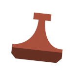

Assalamualaikum warahmatullahi wabarakatuh, Welkom bij Noureddine's digitale oasis. Op deze site wil ik graag iets niche delen over het land waar mijn ouders van dan komen. Marokko heeft verschillende onderwerpen die niet snel gedeeld worden met de mensen buiten het land. Als voorbeeld: wat is het verhaal achter Marokkaanse kleipotten en moks? of het verhaal achter de sheshia hoedt? Ik ben van plan om een connected site te bouwen waar de kans groot is dat jij toch iets nieuws kan leren over de Marokkaanse cultuur.
